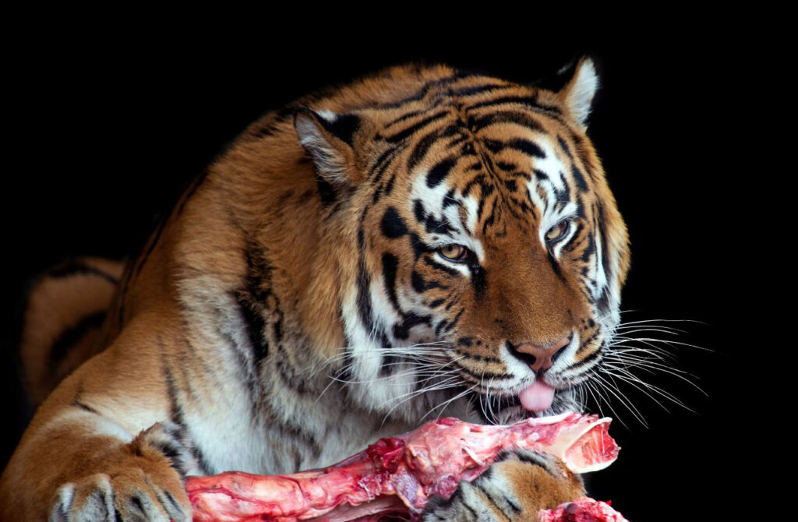

Learn More About the Siberian Tiger
Back to Zoo
Back to Home
Habitat
Siberian tigers, also known as Amur tigers, are native to the Russian Far East, particularly in the Sikhote-Alin mountain range and parts of northeastern China. They inhabit dense forests, including boreal and temperate mixed forests, where they have access to cover for stalking prey and endure harsh, snowy winters.
Diet

Siberian tigers are apex predators and primarily hunt large mammals, including: wild boar, red deer, sika deer, roe deer, and moose. Occasionally, smaller mammals like hares and fish. They are solitary hunters, using stealth, strength, and patience to ambush prey, sometimes traveling vast distances in search of food.
Conservation
Siberian tigers are classified as endangered, with an estimated population of around 500-600 in the wild. Threats to their survival include: poaching, habitat loss, and depletion of prey species, Conservation efforts include: anti-poaching patrols breeding and reintroduction programs and strengthening laws.